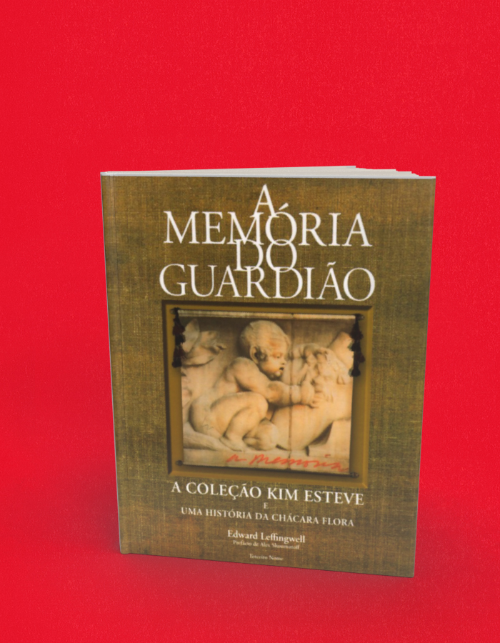

A memória do guardião a coleção de Kim Esteve e uma história da Chácara Flora
A compra acontece no site da livraria, em uma nova aba. Consulte lá os preços e a disponibilidade. Procure pelo título ou ISBN deste livro.
- Autoria / créditos
- Edward Leffingwell
- Páginas
- 268
- Formato
- 26 x 26 cm
- Acabamento
- brochura
Sobre o livro
A preciosa coleção de arte de Kim Esteve, considerada uma das mais representativas da arte brasileira dos anos 80 em diante, é o tema central deste livro escrito pelo crítico de arte americano Edward Leffingwell. O livro recupera a trajetória da familia Esteve até sua chegada ao Brasil; trata do desenvolvimento da Chácara Flora e da região, onde Kim mora e guarda sua coleção; fala sobre a confraternização de artistas, críticos e curadores de arte em seu espaço, onde foram realizadas as festas de abertura das últimas Bienais Internacionais de Arte de São Paulo; finalmente, apresenta obras de mais de cem artistas brasileiros e dezenas de estrangeiros presentes na coleção.
Curador, escritor e crítico de arte independente, Edward Leffingwell é o editor correspondente do Brasil para a revista Art in America. Foi diretor de artes visuais da cidade de Los Angeles e curador-chefe do P.S.1 Contemporary Art Center de Nova York. Tem acompanhado regularmente as Bienais de São Paulo, já escreveu sobre a obra de Mario Cravo Neto, Valdir Cruz, Hélio Oiticica e Cildo Meireles e escreveu monografias e organizou exposições de Neil Williams, John Chamberlain, Michael Tracy, Lawrence Weiner, John McCracken, George Herms e Jack Smith, entre outros. Mora e trabalha em Nova York.
← Voltar ao catálogo